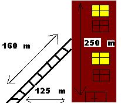

The Pythagorean Theorem
How is this theorem used?
Standard Geometry
There
are many uses for the Pythagorean Theorem. It is used countlessly during our lives and we don't even realize it. It is most commonly known for finding the hypotenuse of a right triangle. One example of this being used is in construction. Architects need to provide exact measurements to create a building, and they use this formula to find out the dimensions of a triangular room. In addition, there is a common math problem that we all know: ladders.  I was in the furniture store the other day and saw a nice entertainment center on sale at a good price. The space for the TV set measured 17" x 21". I didn't want to take the time to go home to measure my TV set, or get the cabinet home only to find that it was too small.
I knew my TV set had a 27" screen, and TV screens are measured on the diagonal. To figure out whether my TV would fit, I calculated the diagonal of the TV space in the entertainment center using the Pythagorean theorem:
17^2 + 21^2 = 289 + 441 = 730.
So the diagonal of the entertainment center is the square root of 730, which is about 27.02".
Sounds like my TV should fit, but the 27" diagonal on the TV set measures the screen only, not the housing, speakers and control buttons. These extend the TV set's diagonal several inches, so I figured that my TV would not fit in the cabinet. When I got home, I measured my TV set and found that the entire set was 21" x 27.5", so it was a good decision not to buy the entertainment center.